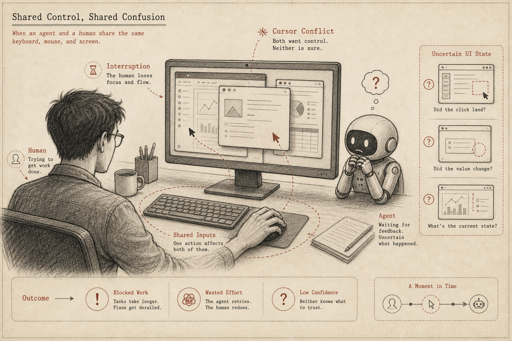
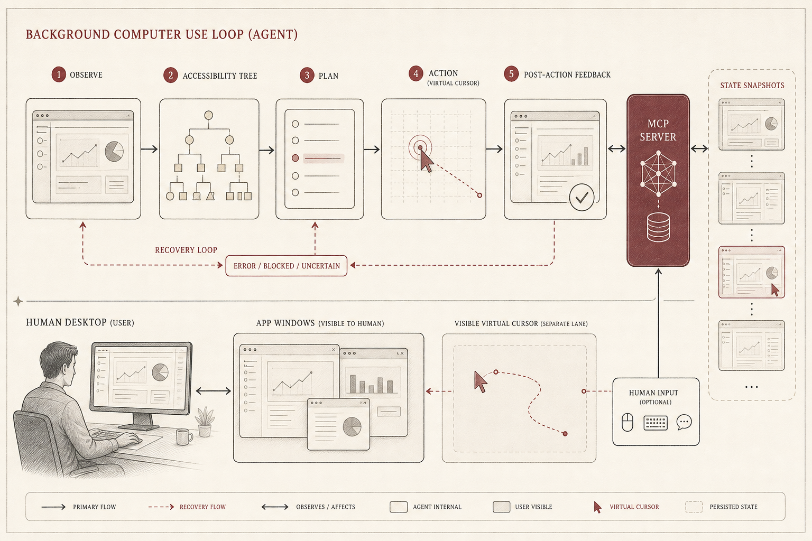

Open Codex Computer Use
A local macOS execution layer that lets agents inspect and operate real apps in the background.
TL;DR
GitHub: OpenCodexLabs/open-codex-computer-use.
Open Codex Computer Use starts from a simple product belief: agents need to operate real apps, but they should not have to steal the user's foreground mouse and keyboard to do it.
The project turns computer use into a local execution layer: the agent observes screenshots and Accessibility state, acts through a controlled tool surface, receives post-action feedback, and keeps its work visible through a separate background lane.
The moment that makes this necessary
The old desktop assumption is one user, one cursor, one foreground task. Agent work breaks that assumption. A coding agent may need to check a browser preview, operate Notes, inspect settings, open a dashboard, or interact with an enterprise app that has no clean API.
If it shares the same foreground cursor, the human is blocked. If it operates without feedback, the agent drifts. If the app has weak accessibility structure, the agent needs a recovery path. That is why computer use should be a real loop, not a blind macro.

The core insight
Computer use is not just "click x, type y." For agents, it is perception, action, feedback, and recovery. The execution layer needs to expose enough state for the model to reason about the UI, and enough post-action evidence for it to know whether the action worked.
Open Codex Computer Use focuses on that missing layer. It is not a new agent harness. It is the local macOS tool surface that a harness can call when the task leaves files and enters real apps.

| Layer | What it provides | Why it matters |
|---|---|---|
| Observation | Screenshot plus Accessibility tree. | The agent sees both pixels and semantic UI structure. |
| Action | Click, scroll, drag, keyboard input, text entry, and accessibility actions. | The agent can operate native apps, not just web pages. |
| Feedback | Post-action state after every operation. | The loop can recover instead of assuming the action worked. |
| Visibility | App-aware virtual cursor and demo-friendly traces. | The user can understand what the agent is doing. |
The workflow
The loop is deliberately boring: observe, plan, act, observe again. The boring part matters. Without post-action state, an agent can only guess. Without Accessibility state, it has to over-rely on pixels. Without a visible cursor or trace, the user cannot trust what happened.
This is also why local execution matters. A real Mac has real apps, real permissions, real WebViews, and real user state. The execution layer should stay close to that environment while still keeping the agent's lane explicit.

Why it matters
AI-native workflows keep crossing the boundary between code and interface. The agent may write the implementation, then verify the UI in a browser, then adjust a setting, then collect a screenshot as evidence. A text-only harness is not enough for that work.
Open Codex Computer Use gives these UI steps a shared primitive. Instead of every agent inventing its own fragile desktop-control trick, the harness can call a local MCP server that speaks in app states, actions, and feedback.
When to use it
| Use it when | Be careful when |
|---|---|
| The task requires native macOS app operation. | The app is self-drawn or exposes weak Accessibility structure. |
| You want local computer use instead of a cloud desktop. | The action has security, payment, or account-changing consequences. |
| You need demos with visible agent actions. | A stable API exists and is safer than UI control. |
The story in one sentence
The agent era needs a clean distinction between human foreground work and agent background work. If the agent must use real apps, it should do so through an explicit observation-action-feedback loop.
Open Codex Computer Use gives agents a local, visible, app-aware operation lane for real macOS work.